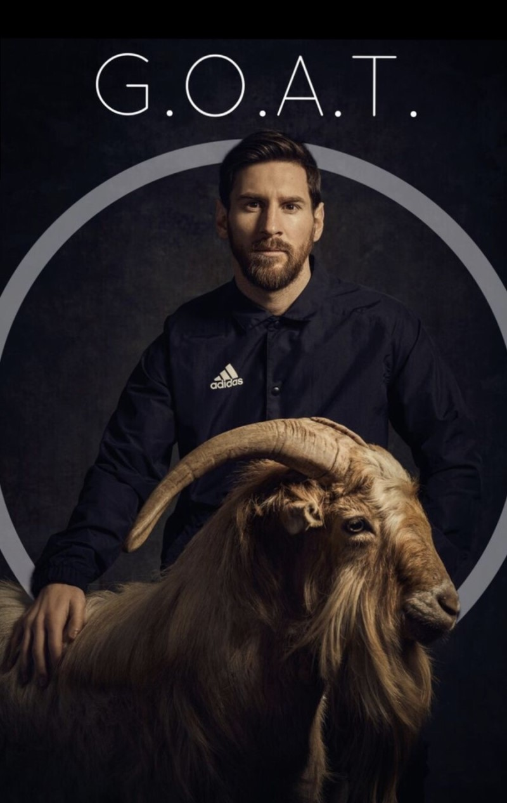

리오넬 안드레스 메시 쿠치티니
국적 : 아르헨티나
출생 : 1987년 6월 24일 (34세), 아르헨티나 산타페주 로사리오
신체 : 169cm / 67kg
포지션 : 윙어, 중앙공격수
21년도 활약상
기록 : 49경기 40골 16어시스트
MoM : 27경기
팀 트로피 : 라리가 코파델레이 우승, 코파아메리카 우승
개인 트로피 : 라리가 득점왕, 코파아메리카 득점왕 & 도움왕 & mvp
그외 기록들
팀기록
FC 바르셀로나 (2004~2021)
라리가: 2004-05, 2005-06, 2008-09, 2009-10, 2010-11, 2012-13, 2014-15, 2015-16, 2017-18, 2018-19
코파 델 레이: 2008-09, 2011-12, 2014-15, 2015-16, 2016-17, 2017-18, 2020-21
수페르코파 데 에스파냐: 2005, 2006, 2009, 2010, 2011, 2013, 2016, 2018
UEFA 챔피언스 리그: 2005-06, 2008-09, 2010-11, 2014-15
UEFA 슈퍼컵: 2009, 2011, 2015
FIFA 클럽 월드컵: 2009, 2011, 2015
아르헨티나 축구 국가대표팀
FIFA 월드컵 준우승: 2014
코파 아메리카: 2021
하계 올림픽 금메달: 2008
FIFA 월드 유스 챔피언십: 2005
개인수상
발롱도르: 2009, 2010, 2011, 2012, 2015, 2019, 2021
발롱도르 드림팀: 2020
FIFA 올해의 선수: 2009, 2010, 2011, 2012, 2015, 2019
UEFA 올해의 선수: 2010-11, 2014-15
UEFA 올해의 클럽 축구 선수: 2008-09
유러피언 골든슈: 2009-10, 2011-12, 2012-13, 2016-17, 2017-18, 2018-19
FIFA FIFPro 월드 XI: 2007, 2008, 2009, 2010, 2011, 2012, 2013, 2014, 2015, 2016, 2017, 2018, 2019, 2020
FIFPro 올해의 영플레이어: 2006, 2007, 2008
UEFA 올해의 팀: 2008, 2009, 2010, 2011, 2012, 2014, 2015, 2016, 2017, 2018, 2019, 2020
UEFA 올해의 공격수: 2008-09, 2018-19
UEFA 올해의 궁극적인 팀: 2015, 2017
FIFA 월드컵 골든볼: 2014
FIFA 월드컵 도움왕: 2018
FIFA 월드컵 드림팀: 2014
코파 아메리카 MVP: 2021
코파 아메리카 득점왕: 2021
코파 아메리카 도움왕: 2011, 2015, 2016, 2021
코파 아메리카 토너먼트의 팀: 2007, 2015, 2016, 2021
코파 아메리카 베스트 영플레이어: 2007
코파 아메리카 베스트 골: 2007
UEFA 챔피언스 리그 시즌의 스쿼드: 2014-15, 2015-16, 2016-17, 2017-18, 2018-19, 2019-20, 2020-21
UEFA 챔피언스 리그 득점왕: 2008-09, 2009-10, 2010-11, 2011-12, 2014-15, 2018-19
UEFA 챔피언스 리그 도움왕: 2011-12, 2014-15
UEFA 챔피언스 리그 결승전 맨 오브 더 매치: 2011
UEFA 슈퍼컵 맨 오브 더 매치: 2009, 2015
FIFA 월드 유스 챔피언십 골든볼: 2005
FIFA 월드 유스 챔피언십 골든슈: 2005
라리가 최우수 선수: 2008-09, 2009-10, 2010-11, 2011-12, 2012-13, 2014-15
라리가 최우수 외국인 선수: 2006-07, 2008-09, 2009-10
라리가 최우수 공격수: 2008-09, 2009-10, 2010-11, 2011-12, 2012-13, 2014-15, 2015-16
라리가 올해의 팀: 2014-15, 2015-16
라리가 득점왕: 2009-10, 2011-12, 2012-13, 2016-17, 2017-18, 2018-19, 2019-20, 2020-21
라리가 도움왕: 2010-11, 2014-15, 2015-16, 2017-18, 2018-19, 2019-20
라리가 이달의 선수: 2016년 1월, 2017년 4월, 2018년 4월ㆍ9월, 2019년 3월ㆍ11월, 2020년 2월, 2021년 2월
트로페오 알프레도 디 스테파노: 2008-09, 2009-10, 2010-11, 2014-15, 2016-17, 2017-18, 2018-19
코파 델 레이 득점왕: 2008-09, 2010-11, 2013-14, 2015-16, 2016-17
코파 델 레이 도움왕: 2015-16, 2016-17
코파 델 레이 결승전 맨 오브 더 매치: 2015, 2017, 2021
FIFA 클럽 월드컵 골든볼: 2009, 2011
FIFA 클럽 월드컵 실버볼: 2015
FIFA 클럽 월드컵 득점왕: 2011
FIFA 클럽 월드컵 도움왕: 2011
FIFA 클럽 월드컵 결승전 맨 오브 더 매치: 2009, 2011
트로페오 EFE: 2006-07, 2008-09, 2009-10, 2010-11, 2011-12
트로페오 알도 로비라: 2009-10, 2010-11, 2012-13, 2013-14, 2014-15, 2016-17, 2017-18
프레미 바르사 유가도르스: 2015-16
IFFHS 세계 최우수 플레이 메이커: 2015, 2016, 2017, 2019
IFFHS 최근 10년 간 세계 최우수 플레이 메이커: 2021
IFFHS 최근 10년 간 최고의 선수: 2021
IFFHS 세계 최상위 부문 목표 득점자: 2012, 2013, 2017, 2018
IFFHS 세계 최고 득점자: 2011, 2012
IFFHS 남자 월드팀: 2017, 2018, 2019
월드 사커 올해의 선수: 2009, 2011, 2012, 2015, 2019
월드 사커 올해의 영플레이어: 2006, 2007, 2008
월드 사커 역대 베스트 XI: 2013
ESM 올해의 팀
: 2005-06, 2007-08, 2008-09, 2009-10, 2010-11, 2011-12, 2012-13, 2014-15, 2015-16, 2016-17, 2017-18, 2018-19, 2019-20, 2020-21
ESPY 최우수 국제 선수: 2012, 2015, 2019
레키프 챔피언 중의 챔피언: 2011
가제타 올해의 운동 선수: 2011
옹즈도르: 2009, 2011, 2012, 2018
옹즈 드 옹즈: 2008, 2009, 2010-11
마르카 레전드: 2009
엘 파이스 유럽 축구의 왕: 2009, 2010, 2011, 2012
돈 발롱 2000년대 베스트 XI: 2010
AFA 아르헨티나 역대 베스트 XI: 2015
아르헨티나 올해의 운동 선수: 2011
아르헨티나 올해의 축구 선수: 2005, 2007, 2008, 2009, 2010, 2011, 2012, 2013, 2015, 2016, 2017, 2019
골든보이: 2005
브라보 상: 2007
마르카 바르셀로나 역대 베스트 XI: 2017
프랑스 풋볼 월드 XI: 2015
프랑스 풋볼 2010년대 베스트 XI: 2019
라우레우스 스포츠 어워드 올해의 운동 선수: 2020
올해의 평화 챔피언: 2020
디아리오 스포르트 국제 평가 수상: 2021
아스 역대 베스트 XI: 2021
개인기록
국가대표
통산 최다 득점: 80골
남미 국적 최다
통산 최다 도움: 47도움
통산 최다 출전: 158회
통산 해트트릭: 7회
한 해 최다 득점: 12골
메이저 대회 최초 득점왕, 도움왕, MVP, 우승 기록자(2021 코파 아메리카)
유럽기록
단일 선수 역대 최다 득점
단일 클럽 역대 최다 득점: 644골(2020.12.23 기준/FC 바르셀로나)
단일 리그 역대 최다 득점(라리가)
5대 리그 역대 최다 득점: 451골(2020.12.23 기준)
5대 리그 역대 최다 득점왕: 8회
현역 선수 역대 최다 도움
단일 선수 역대 최다 도움
단일 리그 역대 최다 도움: 164도움(2019.09.25 기준/라리가)
단일 리그 역대 최다 도움왕: 6회(라리가)
단일 선수 역대 최다 리그 최우수 선수상 수상: 10회(라리가)
단일 시즌 20-20(득점-도움) 달성
단일 시즌 클럽 최다 득점: 73골(FC 바르셀로나)
한 해 클럽 최다 득점: 79골(FC 바르셀로나)
UEFA 챔피언스 리그 단일 클럽 최다 득점(FC 바르셀로나)
UEFA 챔피언스 리그 유일 17시즌 연속 득점(2005-06~2020-21)
UEFA 챔피언스 리그 한 경기 최다 득점: 5골(2011-12)
UEFA 챔피언스 리그 최다 상대팀 상대 득점: 36팀
UEFA 챔피언스 리그 최다 해트트릭: 8회
유러피언 골든슈 최다 수상: 6회 (2009-10, 11-13, 16-19)
유러피언 골든슈 최다 연속 수상: 3연속(2016-19)
유러피언 골든슈 단일 시즌 최다 득점: 50골(2011-12)
유러피언 골든슈 단일 시즌 최고 포인트: 100 포인트(2011-12)
유러피언 골든슈 유일한 세 자리 수 포인트 수상자
최초 유럽 단일 리그 400골 달성
최초 7시즌 40골 15도움 이상 달성
최초 12시즌 연속 25골 이상 달성
세계 기록
발롱도르 최다 수상: 7회(2009, 2010, 2011, 2012, 2015, 2019, 2021)
발롱도르 최다 연속 수상: 4연속(2009 ~ 2012년)
발롱도르 최초 4회, 5회, 6회, 7회 수상자
발롱도르 최연소 2회, 3회, 4회, 5회, 6회, 7회 수상자
발롱도르 유일 2000년대, 2010년대, 2020년대 수상자
발롱도르 최다 포디움: 13회(2007 ~ 2017, 2019, 2021)
발롱도르 최다 연속 포디움: 11회(2007~2017)
FIFA 올해의 선수 최다 수상: 6회
FIFA FIFPro 월드 XI 최다 선정: 14회
FIFA FIFPro 월드 XI 최다 연속 선정: 14회
FIFA 월드컵 유일 10대, 20대, 30대 연령대 득점자
최초 동일 팀 2회 트레블 선수: FC 바르셀로나(08-09, 14-15)
단일 클럽 통산 최다 득점: 672골(FC 바르셀로나)
단일 선수 통산 최다 우승 2위: 36회
단일 선수 통산 최다 리그 최우수 선수상 수상: 10회(라리가)
단일 선수 통산 최다 리그 도움왕: 6회(라리가)
단일 선수 통산 최다 국가대표 메이저 대회 공격포인트: 21개[
단일 선수 통산 최다 국가대표 메이저 대회 MVP 수상: 3회
단일 선수 통산 최초 국가대표 메이저 대회 MVP, 득점왕, 도움왕 동시 석권(코파 아메리카/2021년)
한 해 최다 득점 : 91골(2012년)
한 해 국제 대회 최다 득점 2위: 25골(2012년)
한 시즌 최다 득점: 73골(2011-12)
최초 300도움 달성
최초 통산 공격포인트 1000개 달성
최초 단일 리그 3시즌 연속 득점왕, 도움왕 동시 석권(라리가)
IFFHS 세계 최우수 플레이메이커 최다 수상: 4회(2015, 2016, 2017, 2019)
FIFA 클럽 월드컵 골든볼 최다 수상: 2회(2009, 2011)
라리가
통산 최다 득점: 474골
통산 최다 도움: 192도움
통산 최다 우승: 35회
리그 최다 우승 2위: 10회
통산 최다 승: 377승
통산 최다 시즌 최우수 선수: 10회
통산 최다 득점왕: 8회
통산 최다 도움왕: 6회
역대 최다 해트트릭: 36회